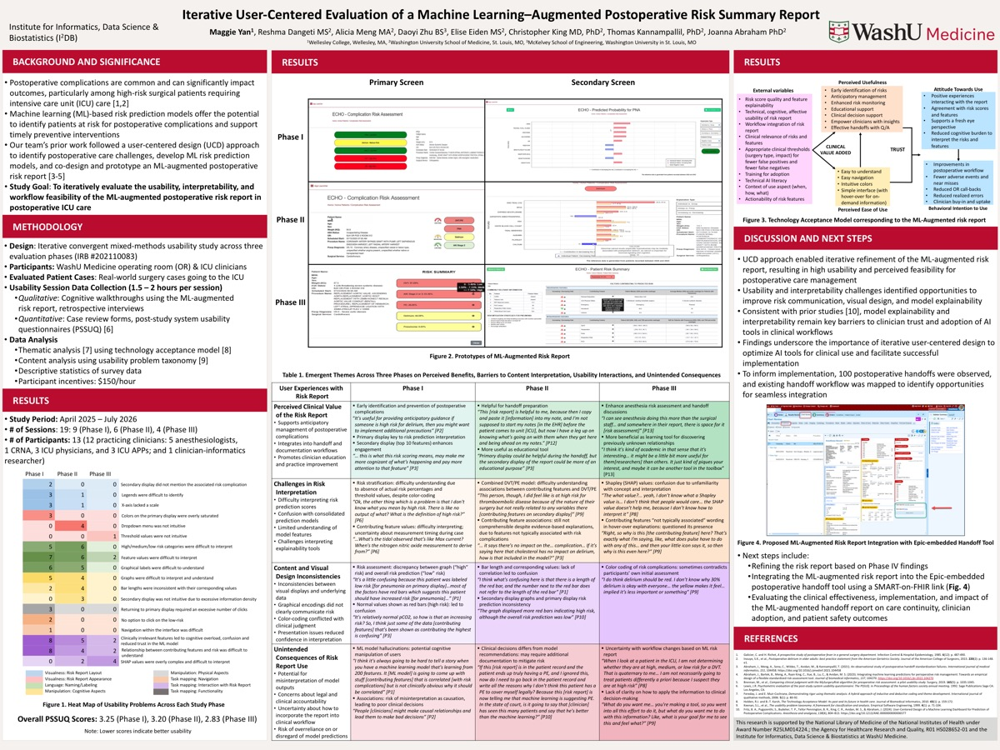

Iterative User-Centered Evaluation of a Machine Learning-Augmented Postoperative Risk Summary Report
Summer 2026An iterative mixed-methods usability study of a machine learning risk report for postoperative ICU care, in its third phase when I joined, alongside one hundred OR to ICU handoff observations. I helped conduct the cognitive walkthroughs with clinicians and coded the observation notes into themes.
Bioinformatics Research Intern · Institute for Informatics, Data Science & Biostatistics (I2DB), Washington University in St. Louis